The OpenIndiana Handbook
< Place Holder for future content >
Introduction
< Place Holder for future content >
Introducing OpenIndiana
The OpenIndiana project is the open source community which develops, maintains, and supports the OpenIndiana distribution, an illumos based Unix-like operating system derived from OpenSolaris. The purpose of the OpenIndiana Project is to ensure the continued availability of an openly developed distribution based on OpenSolaris. The OpenIndiana project is also a continuation of the collaborative effort and community spirit of the OpenSolaris project.
For a comprehensive history of the OpenSolaris project, see Jim Grisanzio's OpenSolaris timeline.
OpenIndiana Software Releases
Approximately every six months, the OpenIndiana project releases a snapshot of the Hipster rolling release branch. Ideally suited for both workstations and servers, simply choose the installer type which best serves your needs.
| Workstation | Server |
|---|---|
| Live installer (Gnome desktop) | Text installer (command line console) |
NOTE:
CAUTION:
System Requirements
| CPU | Disk Space | Memory (RAM) |
|---|---|---|
| 64 Bit | 20GB (or more) | 4GB (or more) |
Finding help and support
< Place Holder for section Introduction Content >
Local system command line help
- apropos - search the manual page names and descriptions
- find - search for files in a directory hierarchy
- info - read Info documents
- locate - find files by name
- man - an interface to the on-line reference manuals
Web based support resources
| Resource | URL |
|---|---|
| User Support IRC channel | #openindiana on irc.freenode.net |
| Development IRC channel | #oi-dev on irc.freenode.net |
| Documentation IRC channel | #oi-documentation on irc.freenode.net |
| OpenIndiana Mailing Lists | http://openindiana.org/mailman |
| OpenIndiana Wiki | http://wiki.openindiana.org |
| OpenIndiana Bug Tracker | http://www.illumos.org/projects/openindiana/issues |
Creating Bootable Media
Downloading the software
If you wish to purchase a ready made DVD or USB drive there is also OSDISC.COM.
Creating a bootable OpenIndiana DVD
- Obtain the software from the download site
- Check MD5/SHA
- Burn it to a DVD
BSD
< Place holder for content >
Illumos/Solaris
< Place holder for content >
Linux
Linux Console
$ wget "http://dlc.openindiana.org/isos/hipster/OI-hipster-gui-20160421.iso"
$ wget "http://dlc.openindiana.org/isos/hipster/OI-hipster-gui-20160421.iso.sha256sum"
$ sha256sum --check OI-hipster-gui-20160421.iso.sha256sum
OI-hipster-gui-20160421.iso: OK
$ wodim -v dev=/dev/sr0 -dao OI-hipster-gui-20160421.iso
Linux GUI
< Place holder for content >
Mac OS-X
MAC Console
< Place holder for content >
MAC GUI
< Place holder for content >
Windows
Windows Console
< Place holder for content >
Windows GUI
< Place holder for content >
Creating a bootable OpenIndiana USB Flash Drive
Prerequisites
- USB flash drive - (2GB or larger)
- Download the OpenIndiana USB Live Media installer
- Download the appropriate OpenIndiana 1G or 2G header file
NOTE:
- There are 2 unique USB header files (1G and 2G).
- Please ensure you have selected the correct file.
- The 1G.header is only suitable for use with the text installer (Command line console).
- The 2G.header is only suitable for use with the live installer (Gnome desktop).
- The files are NOT interchangeable.
Failure to use the correct USB header file can result in the USB drive either failing to boot, or only partially booting (and falling back to systems maintenance mode with KSH93 errors).
CAUTION:
- When attaching backward compatible USB 3.0 devices to your system, please ensure they are NOT attached to a USB 3.0 port.
Live Media Creation Methods
| Operating System | Method |
|---|---|
| BSD | dd |
| illumos/Solaris | dd |
| Linux | dd |
| MAC OS X | dd |
| Windows | OpenSolaris Live USB Creator |
Identifying the path to your USB device
| Operating system | Command | Device |
|---|---|---|
| BSD | camcontrol devlist |
/dev/da* |
| illumos/Solaris | rmformat -l |
/dev/rdsk/c*t*d* |
| Linux | lsblk |
/dev/sd* |
| MAC OS X | diskutil list |
/dev/disk* |
| Windows | N/A | N/A |
CAUTION:
- Do not including any partition or slice number.
- For example use
sda, notsda1;c0t0d0, notc0t0d0p1.
- For example use
- Make sure you identify the correct storage device.
- All data on the device will be erased.
- If any filesystems are located on the USB storage device, they must first be unmounted.
- Desktops may automatically mount removable devices.
- As necessary, select any desktop icons for the USB device and issue an 'Eject' or 'Unmount' command.
- For Linux, use
umount <path>. - For illumos/Solaris use
rmumount <path>. - for MAC OS X use
diskutil unmountDisk <path>. - Verify using the
mountcommand.
BSD/Linux/OS X
$ cat 1G.header OI-hipster-text-20160421.usb | sudo dd bs=1024k of=/dev/sdX
# or if you have a live image larger then 1G
$ cat 2G.header OI-hipster-gui-20160421.usb | sudo dd bs=1024k of=/dev/sdX
# where "X" is the letter of your USB device
illumos/Solaris
< Place holder for content >
Windows
< Place Holder for content >
Testing Openindiana Using Live Media
The Live Media DVD and USB installers provide a graphical live environment where you can explore OpenIndiana and test the compatibility of your hardware. When using Live Media to explore OpenIndiana, no changes are made to your system, unless you explicitly choose to install OpenIndiana.
Although it is possible to use it over a network with SSH X forwarding if you enable SSH.
Booting OpenIndiana
< Place holder for section introduction content >
Booting Physical Hardware
Insert the bootable media (DVD or USB flash drive) and boot (start/restart) your computer. For the computer to boot from the media, you may need to specify the device by pressing the boot order hotkey. Alternately, you may need to change the boot device order in your BIOS configuration.
Booting Virtual Hardware
The most efficient way to boot a virtual machine is to boot directly from the DVD ISO file. Alternately, you may use host to guest DVD/USB passthrough to boot from physical media.
Virtualbox
For VirtualBox 3.2 or later:
"Use host I/O cache" must be enabled in the emulated storage controller used by the virtual machine to successfully boot OpenIndiana.
Vmware Workstation Player
< place holder for content >
Vmware ESXI
< place holder for content >
The OpenIndiana Boot Menu
When you see a menu, press Enter to start OpenIndiana on your computer. As it runs, you will be prompted with a few questions. You should eventually be presented with a desktop.
Authenticating when using the OpenIndiana LiveDVD
The user login for the text session is username 'jack' along with the password 'jack'.
For administrative or elevated access, prepend your commands with pfexec.
You may also use the sudo command.
You may obtain root using the su command along with the password 'openindiana'.
Using the Device Driver Utility
You can use the Device Driver Utility to check if your hardware requires additional drivers.
Preparing to Install OpenIndiana
< Place Holder for section introduction content >
Backing up data
< Place holder for content >
Deciding where to install OpenIndiana
< Place holder for content >
Gathering Network Information
< Place holder for content >
Installing OpenIndiana
< Place Holder for content >
Installing OpenIndiana from Live Media
To install OpenIndiana from Live Media, you have two options.
- GUI based guided install.
- Text based guided install.
Each of these options is represented by a desktop icon. Select the appropriate installer option by clicking the corresponding desktop installer icon.
GUI based Guided Install
< Place Holder for Content >
Text based Guided Install
The text based guided install start and runs within a command line console. Navigation within the installer is performed by pressing specifically designated navigation keys (F2, Tab, etc.).
NOTE:
Start the Text based Guided Install by double clicking the Text based Guided Install icon.
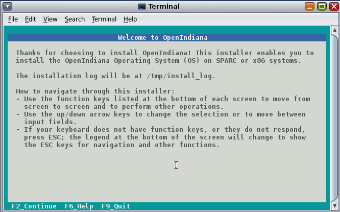
When you begin the Text based Guided Install, you are presented with the welcome screen. Press F2 to continue.
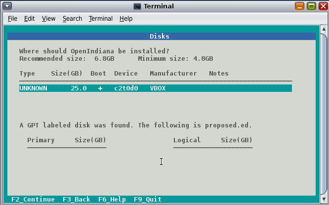
The installer identifies the disks which are available for installation. If you have only a single disk, it is already selected. If you have multiple disks, use the arrow keys to select the appropriate disk. When finished, press F2 to continue.
NOTE:
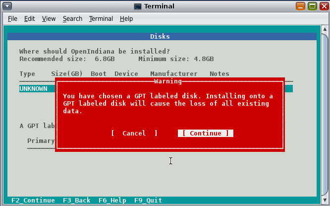
If your disk contains a GPT disk label, the entire disk will be reformatted. This warning serves as your advisory. If this is acceptable, press F2 to continue. Otherwise use the arrow keys to select cancel.
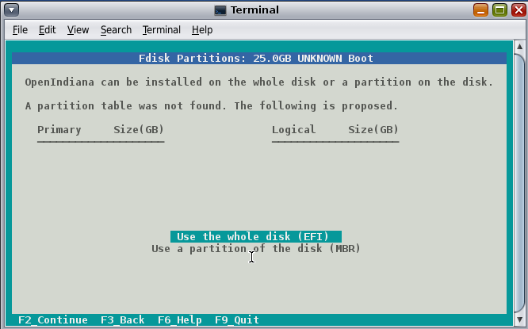
In this screen you are presented with the choice of how to partition the disk. You may select to use an EFI partition (which uses the entire disk), or you may choose to create MBR partitions. Using the arrow keys select the appropriate choice and press F2 to continue.
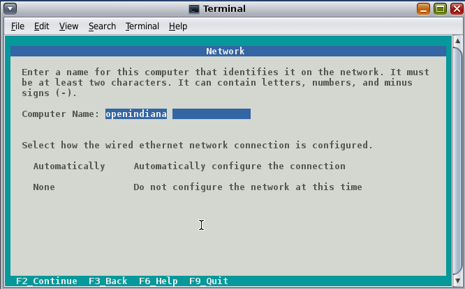
Specify the computer name you wish to use. By default the computer name is openindiana.
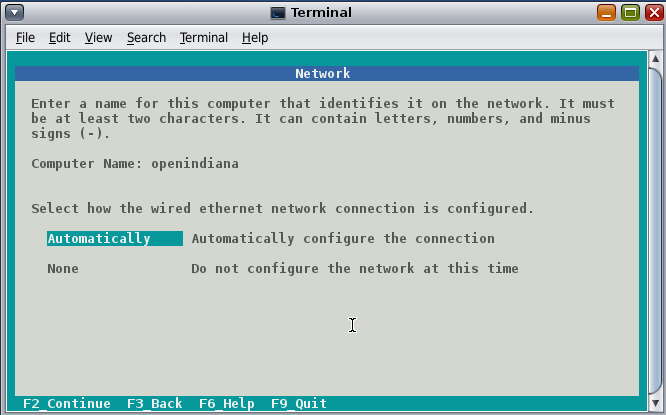
This screen is the same as as the previous. We have illustrated it twice to help clarify the 2 distinct configuration tasks which need to be completed on the screen.
After configuring the computer name, now you need to decide whether to automatically configure networking (DHCP), or leave network unconfigured. Use the arrow keys to select your choice. Press the F2 key to continue.
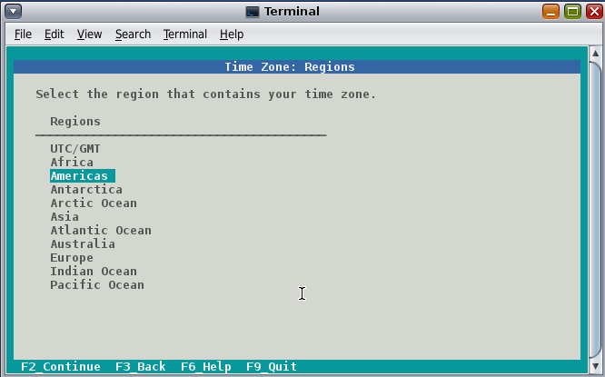
In this screen (and the following 2 screens) you will configure your time zone. If you select UTC/GMT, you will only be presented with this single screen. Using the arrow keys select the appropriate region. Press F2 to continue.
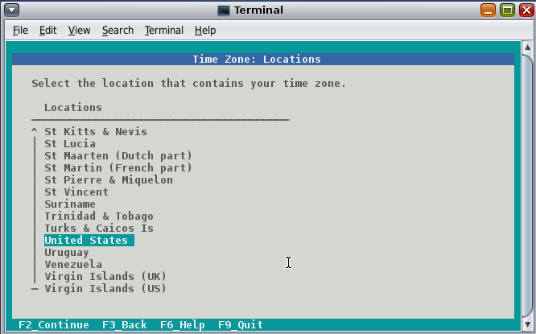
Using the arrow keys, select your time zone location. Press F2 to continue.
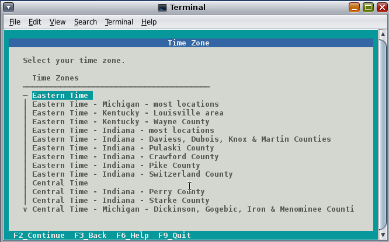
Using the arrow keys, select the appropriate time zone. Press F2 to continue.
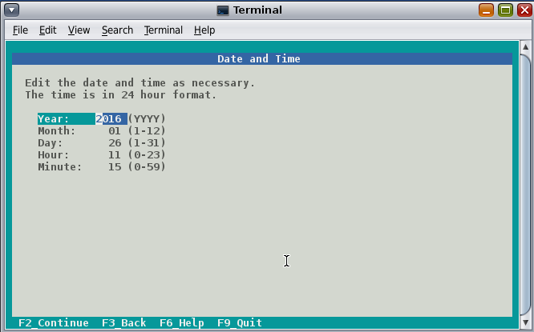
In this screen you may configure the date and time. Using the arrow keys navigate between the fields. Press F2 to continue.
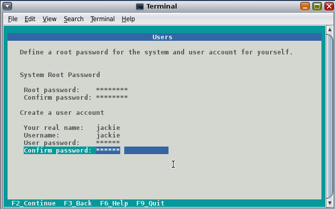
In this screen you are presented with several different fields to configure. Using the arrow keys navigate between the fields. Press F2 to continue.
NOTE
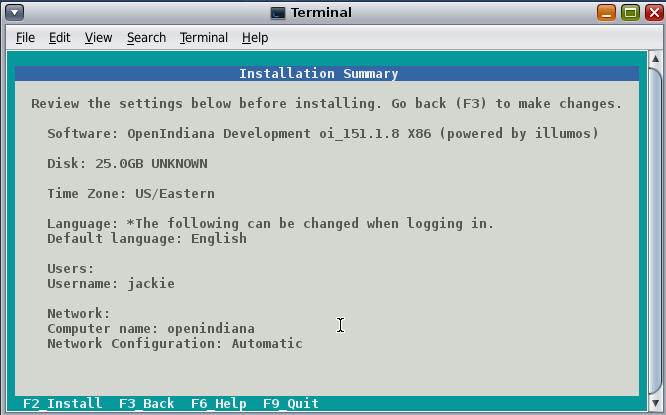
Now that you have completed the installation configuration, you are presented with an Installation Summary. If these configuration settings are correct, begin the installation by pressing the F2 key.
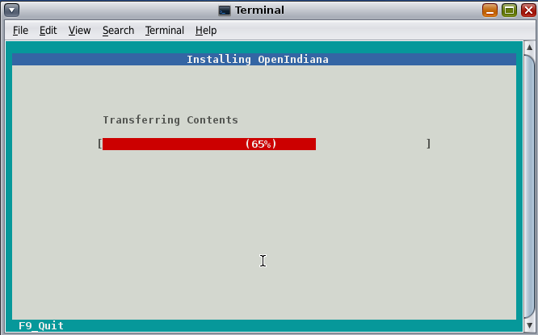
Installation progress is measured by means of a status bar.
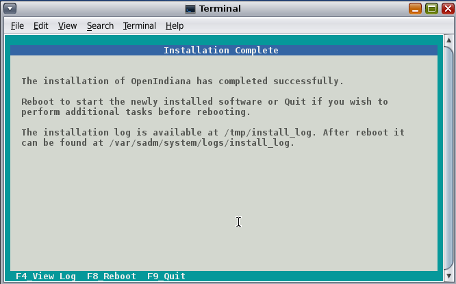
After the installation completes you are presented with a summary screen. The installation logs are available by pressing the F4 key. If you ran the installation from Live Media, can exit the installation by pressing F9. Otherwise, you will want to reboot the system using the F8 key.
Installing OpenIndiana using the Text Installer
The text installer is not graphical nor does not have a live environment. When you boot from the text installer, it immediately begins the installation process using the previously described Text based Guided Install.
Troubleshooting Installations
- If you do not see a menu after booting your computer with the DVD or USB device, and instead see some text and a "grub>" prompt, there may be an error in your copy of the installer, or it was created incorrectly.
- If you see a "login:" prompt after selecting your keyboard and language and no desktop appears after several seconds, there may be a problem with the drivers for your graphics hardware.
- Please let us know via IRC or the mailing list if this happens.
- When you contact us, please include any error messages you see on the console, as well as the output of the
svcs -xvcommand. - If possible, also include the contents of the file
/var/log/Xorg.0.log.
USB 3.0 issues
- OpenIndiana Hipster does not currently support USB3.
- You cannot boot a USB thumbdrive installer from a USB3 port.
Using OpenIndiana
< Place holder for section introduction content >
Configuring Networking
< Place holder for section introduction content >
Command Line
Manual Configuration (static IP)
:~$ sudo svcadm disable physical:nwam
Define in your IP/hostname /etc/hosts, if not already, an entry for this host. For example:
192.168.1.22 hostname hostname.local localhost loghost
# Subsittude 192.168.1.22 for YOUR IP
Enable the default physical service with svcadm and configure the interface:
:~$ sudo svcadm enable physical:default
Configure interface with ipadm:
:~$ sudo ipadm create-addr -T static -a local=192.168.1.22/24 bge0/v4static
If you do not know what the interface name is (bge0 in this case); then type in
:~$ dladm show-link
or:
:~$ kstat -c net | grep net
# look for hme0, bge0, e1000g0 or soemthing that resembles the driver in use.
Add gateway
:~$ sudo route -p add default 192.168.1.121
or
:~$ sudo nano /etc/defaultrouter
# Enter in your gateways IP
Set DNS server(s)
:~$ sudo nano /etc/resolv.conf
# Enter in the DNS server IP(s)
nameserver 192.168.1.121
or
:~$ sudo echo 'nameserver 192.168.1.121' >> /etc/resolv.conf
Set the workgroup
:~$ sudo smbadm join -w workgroupname
Restart
:~$ sudo reboot
NOTE:
:~$ sudo cp /etc/nsswitch.dns /etc/nsswitch.conf
credit for this section of docs go to /u/127b
Automatic Configuration (NWAM)
- How to use NWAM (network auto magic)
Desktop GUI
Manual Configuration
< Place Holder >
Automatic Configuration
< Place Holder >
Troubleshooting
- Make sure the network auto magic 'Location' setting is configured as 'Automatic' and not 'NoNet'
Video Card Support (3D)
Nearly all cards are supported for 2nd, but only Nvidia is supported for 3D. Work is progressing to provide support for AMD and Intel.
Nvidia
- Talk about the expected behavior when booting the live CD from a system with an NVIDIA card.
- Discuss procedure for adding an NVIDIA card to a system that was using VESA or some other non-3d video driver.
- Troubleshooting - what logs to look at, manual configuration, etc.
- Walk through NVIDIA utility screens.
AMD
- Currently no 3rd support, VESA driver only.
Intel
- Still working to incorporate this into Hipster.
How does one add a missing device driver?
< Write about finding hardware id's, searching for drivers, installing, loading, /etc/driver_alias'es file. >
How can the desktop be modified?
- Gnome walkthrough
- Appearance applet
- Enabling Compiz
- Configuring font anti-aliasing
How does one keep the system updated?
< Place holder for content >
Using pkg to list packages currently installed on the system
< Place holder for content >
Using pkg to search for packages
< Place holder for content >
Using pkg to update the system
pkg update -nvwill perform a dry run and list the changes which would have been made to the system.pkg updatewill perform a normal update and print a very brief summary.pkg update -vwill perform the update and then print a summary of what was updated.pkg historywill provide basic details for previous uses of the pkg command.
How does one find and install more software?
< Place Holder for Content >
Using the pkg publisher and pkg set-publisher commands
The pkg publisher command is used to add and remove remote repositories.
pkg publisher- lists all the repositories configured on the system.- To add a repository, use
pkg set-publisher -O <Repository_URL> <Repository_Name>
Using the pkgrepo command
The pkgrepo command is primarily used for creating and working with IPS repositories.
It can also be used for querying the contents of a repository.
pkgrepo info -s <repo_URL>pkgrepo list -s <repo_URL> <package_group>
Configuring a UPS
- NUT?
How does one perform system backups?
- Time Machine
- ZFS exports
- Bacula?
How does one add additional users?
- Basic system administration
- Basic Unix commands
Working with storage and file systems
< Place holder for section introduction content >
How does one mount or import additional disks?
commands used
mount
NTFS support - 3rd party
How does one mirror their root zpool?
- Adding a 2nd disk to the root pool
How does one create additional zpools?
- zpool create command
- Mirrors
- Raidz
Modifying zpool settings and attributes
- zpool get/set commands
Modifying zfs file system settings and attributes
- zfs get/set commands
How does one create additional zfs datasets?
- zfs create command
Configuring system swap
- zfs set command
- swap -l
Using OpenIndiana as a NAS
< place holder for section introduction content >
Configuring OpenIndiana as a CIFS (Samba) Server
Home NAS setup steps
- Get the hardware
- Assemble the hardware
- Install OpenIndiana
- Configure OpenIndiana
- Configure Windows
commands used
sharemgr- configure and manage file sharingsmbadm- configure and manage CIFS local groups and users, and manage domain membershipzfs- configures ZFS file systemspasswd- change login password and password attributeschown- change file ownership
Start by listing available storage pools.
# zfs list
NAME USED AVAIL REFER MOUNTPOINT
storage 498K 899G 19K /storage
Create your ZFS dataset to be shared via CIFS/SMB.
# zfs create -o casesensitivity=mixed -o sharesmb=on storage/backup
Start the CIFS service.
# svcadm enable -r smb/server
Join the CIFS server to a workgroup.
# smbadm join -w WORKGROUP
Configure PAM authentication for the CIFS service.
# echo "other password required pam_smb_passwd.so.1 nowarn" >> /etc/pam.conf
Reset the password for the local user accounts which will be used for remotely accessing the CIFS/SMB share.
# passwd <user_account>
Set the share name to be used for the CIFS/SMB share.
# zfs set sharesmb=name=backup storage/backup
Change the ownership of ZFS dataset to the user account which will be used for remotely accessing the CIFS/SMB share.
# chown -R <user_account> /storage/backup
Verify everything is all set to go.
# sharemgr show -vp
default nfs=()
smb smb=()
* /var/smb/cvol smb=() ""
c$=/var/smb/cvol smb=(abe="false" guestok="false") "Default Share"
zfs smb=()
zfs/storage/backup smb=()
backup=/storage/backup
You can create additional CIFS datasets using the following 4 commands.
# zfs create -o casesensitivity=mixed -o sharesmb=on <pool_name/dataset_name>
# zfs set sharesmb=name=<new_share_name> <pool_name/dataset_name>
# chown -R <user_account> <path_to_dataset>
# sharemgr show -vp
Configuring CIFS/SMB linux client connectivity
Adding a remote share using the linux smbclient
Adding a remote share using the KDE Dolphin file manager GUI
- In the left hand pane click Network
- In the right hand pane click Add Network Folder
- The Network Folder Wizard opens
- Select the radio button for Microsoft Windows network drive and click next
- Specify a name for the share - can be anything - this is just a label
- Specify the remote CIFS/SMB server name (or IP address)
- Specify the share name of the remote CIFS/SMB share
- Click the save and connect button
- You'll be prompted for a remote username and password
- Ensure the checkbox is marked to save credentials or you'll be asked for everything you do.
Adding a remote share using a Windows client
- < place_holder >
Configuring OpenIndiana as an NFS Server
< Place holder for content >
Configuring OpenIndiana as an ISCSI Target Server -(COMSTAR)
< Place holder for content >
Getting OI to play Multimedia
- How to get OI to play a DVD
- How to get flash player installed and working.
- How to get VLC installed and working.
- Codecs, etc.
- How to use the hidden
gstreamer-propertiesconfiguration utility.
Using OpenIndiana as a Media server, HTPC, etc.
- http://forum.kodi.tv/showthread.php?tid=44315&page=2
- http://lightsandshapes.com/plex-on-smartos.html
Graphics workstation
< Place holder for content >
Desktop Publishing system, Etc.
< Place holder for content >
Virtualization Storage Server
- Poor man's standalone ISCSI SAN linked to a 2nd machine running VMware ESXI (2 computers required)
- A variation of this would be to run OI as an ESXI guest with local storage hardware "passed through" to OI and then subsequently share ZFS volumes via ISCSI with the ESXI host itself. In this configuration, OI effectively becomes a SAN (1 computer required)
Virtualization Server
- Qemu-KVM walkthrough (Does hipster even have this package?)
- Yes, KVM is the package name
-
Using VIRSH, Virt-manager, etc. (Does hipster [or any illumos distro for that matter] even have virsh or Virt-manager)
- If not, what tools are used to manage the Joyant KVM port (VMADM perhaps?)
- Virtualbox walkthrough - ditto...is there a package available?
-
illumos KVM port does not support AMD processors.
- Intel processors require EPT support.
In a nutshell, most modern Intel processors such as i3, i5, i7, and Xeon support EPT. Most older processors such as Core2duo and Core2Quad lack EPT support, and a few of them lack virtualization support at all.
You can check your processor for EPT support via the following link: http://ark.intel.com/Products/VirtualizationTechnology
- Hipster is currently testing a new package for managing KVM instances as SMF services.
<leoric> Testers needed! pkg://userland/system/qemu/kvmadm@0.10.3,5.11-2015.0.2.0:20160322T212709Z
<leoric> jeffpc: I know, you like kvm :)
<jeffpc> heh
<jeffpc> leoric: is there documentation for it?
<leoric> https://github.com/hadfl/kvmadm/blob/master/doc/kvmadm.pod
<jeffpc> oh, is it http://www.kvmadm.org/ ?
<leoric> yes
<jeffpc> interesting
<jeffpc> I'll have to give it a try at some point
Zones - running web stuff in zone, development, etc.
- Need to mention some of the changes to zone management...e.g..
- sys-unconfig gone.
- sysding replaced syscfg
- now have to have DNS, root password, etc. all configured inside the zone before being able to logon using
zlogin -C <zonename>, otherwise have to dozlogin <zonename>. So a fair amount of stuff has changed there.
- now have to have DNS, root password, etc. all configured inside the zone before being able to logon using
Clustering with Open HA Cluster
See old sun docs
Also see:
Developing with OpenIndiana
How can OI be used as a development platform?
< Place holder for content >
What programming tools, languages, etc., are available?
< Place holder for content >
How can OI be used to further the development of OI itself?
< Place holder for content >
Software Development Testing
< Place Holder >